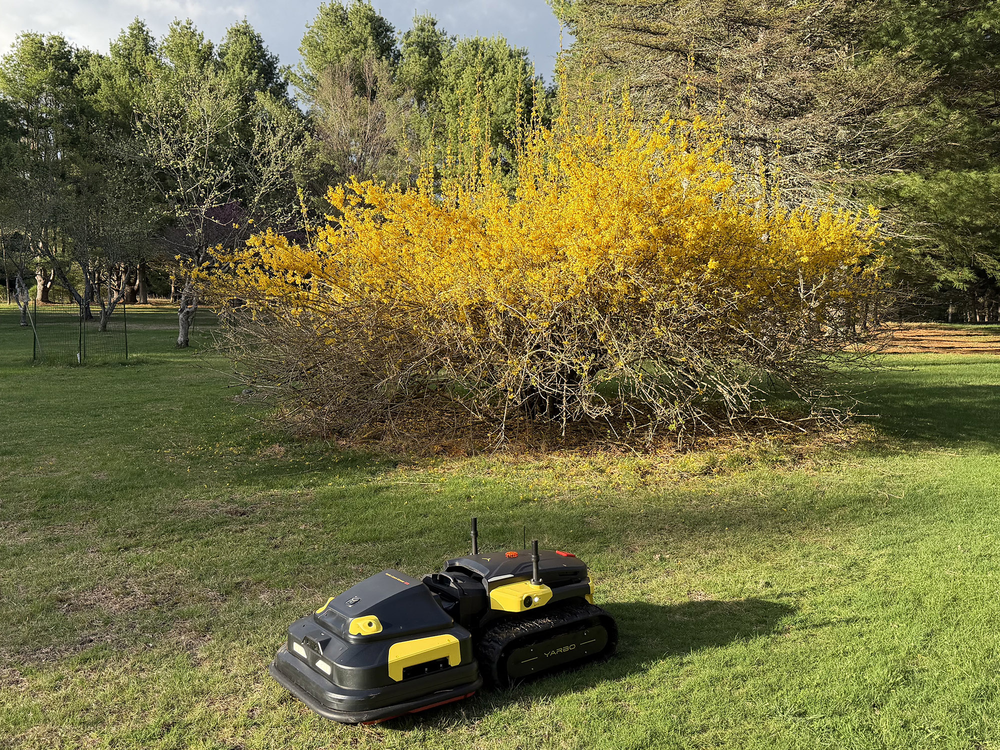
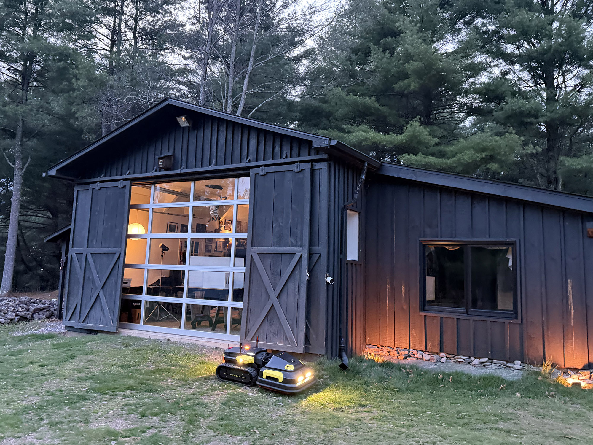

Real Properties. Real Results.
Yarbo working on actual Catskills terrain — hills, irregular lots, and the kind of properties most robotic mowers can't handle.


Interested in seeing a live demo on your property? Get in touch.